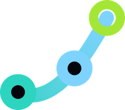

<!doctype html>
<html lang="bg">
<head>
<meta charset="utf-8">
<title>TRACE ad render v2</title>
<link rel="stylesheet" href="node_modules/@fontsource/unbounded/600.css">
<link rel="stylesheet" href="node_modules/@fontsource/unbounded/700.css">
<link rel="stylesheet" href="node_modules/@fontsource/unbounded/800.css">
<link rel="stylesheet" href="node_modules/@fontsource/golos-text/400.css">
<link rel="stylesheet" href="node_modules/@fontsource/golos-text/500.css">
<link rel="stylesheet" href="node_modules/@fontsource/golos-text/600.css">
<link rel="stylesheet" href="node_modules/@fontsource/golos-text/700.css">
<link rel="stylesheet" href="node_modules/@fontsource/caveat/500.css">
<link rel="stylesheet" href="node_modules/@fontsource/caveat/700.css">
<style>
body{margin:0;background:#05070d}
.U{font-family:'Unbounded',sans-serif}
.cap{font-family:'Golos Text',sans-serif;font-size:13px;font-weight:600;letter-spacing:.16em;text-transform:uppercase}
.bg{background:
  radial-gradient(900px 700px at 80% 8%,rgba(45,212,191,.16),transparent 60%),
  radial-gradient(800px 700px at 10% 95%,rgba(56,189,248,.12),transparent 60%),
  linear-gradient(to right,rgba(167,243,232,.035) 1px,transparent 1px) 0 0/90px 90px,
  linear-gradient(to bottom,rgba(167,243,232,.035) 1px,transparent 1px) 0 0/90px 90px,
  #05070d}
.ruled{background-image:repeating-linear-gradient(to bottom,transparent 0,transparent 71px,rgba(43,58,103,.22) 71px,rgba(43,58,103,.22) 73px)}
.grad{background:linear-gradient(90deg,#2dd4bf,#7dd3fc);-webkit-background-clip:text;background-clip:text;color:transparent}
@keyframes rise{from{opacity:0;transform:translateY(60px)}to{opacity:1;transform:none}}
.rise{animation:rise .7s cubic-bezier(.16,1,.3,1) both}
@keyframes drop{from{opacity:0;transform:translateY(-160px) rotate(-16deg) scale(1.12)}to{opacity:1;transform:rotate(-5deg)}}
.paper{animation:drop .8s cubic-bezier(.16,1,.3,1) both}
@keyframes strike{from{transform:scaleX(0)}to{transform:scaleX(1)}}
.strike{transform-origin:left center;animation:strike .45s cubic-bezier(.6,0,.3,1) both}
@keyframes pop{0%{opacity:0;transform:scale(.6)}70%{opacity:1;transform:scale(1.06)}100%{opacity:1;transform:scale(1)}}
.pop{animation:pop .45s cubic-bezier(.16,1,.3,1) both}
@keyframes caret{50%{opacity:0}}
.caret{animation:caret .8s steps(1) infinite}
@keyframes slideL{from{opacity:0;transform:translateX(90px)}to{opacity:1;transform:none}}
.slideL{animation:slideL .55s cubic-bezier(.16,1,.3,1) both}
@keyframes scan{from{transform:translateY(-40px)}to{transform:translateY(1960px)}}
.scan{animation:scan 1.6s cubic-bezier(.6,0,.4,1) both}
@keyframes letter{from{opacity:0;transform:translateY(140px)}to{opacity:1;transform:none}}
.letter{display:inline-block;animation:letter .6s cubic-bezier(.16,1,.3,1) both}
@keyframes zoomIn{from{opacity:0;transform:scale(1.18)}to{opacity:1;transform:none}}
.zoomIn{animation:zoomIn .7s cubic-bezier(.16,1,.3,1) both}
@keyframes mark{0%{opacity:0;transform:scale(.4) rotate(-30deg)}100%{opacity:1;transform:none}}
.mark{animation:mark .8s cubic-bezier(.16,1,.3,1) both;filter:drop-shadow(0 0 60px rgba(45,212,191,.45))}
@keyframes fade{from{opacity:0}to{opacity:1}}
.fade{animation:fade .5s ease both}
@keyframes swap{from{opacity:0;transform:translateY(24px)}to{opacity:1;transform:none}}
.swap{animation:swap .45s cubic-bezier(.16,1,.3,1) both}
.x{flex:none;width:76px;height:76px;border-radius:38px;background:rgba(248,113,113,.14);display:grid;place-items:center;color:#f87171}
.pain{display:flex;align-items:center;gap:32px;padding:34px 0;border-top:1px solid rgba(167,243,232,.16)}
.card{padding:34px 32px;border-radius:24px;border:1px solid rgba(45,212,191,.22);background:linear-gradient(160deg,rgba(45,212,191,.12),rgba(7,12,20,.8));display:flex;flex-direction:column;gap:10px}
</style>
</head>
<body>
<div id="stage" class="bg" style="width:1080px;height:1920px;position:relative;overflow:hidden;color:#eafffb;font-family:'Golos Text',sans-serif"></div>
<script>
const TEAL = '#2dd4bf', SKY = '#7dd3fc', LIME = '#a3e635', RED = '#f87171', MUTE = 'rgba(167,243,232,.62)';
// Scene windows (ms). The app scene is a real screen recording laid into the phone by ffmpeg.
const SC = [['hook',0,3000],['pain',3000,9800],['reveal',9800,12000],['app',12000,33200],['custom',33200,38200],['cta',38200,42200]];
const STEPS = [[12000,'01','Вход'],[16900,'02','Шофьор, кола, маршрут'],[20900,'03','Посетени обекти'],[23700,'04','Километри'],[26800,'05','Запис и история']];
const CAPS = [
  [0,3000,'Още пишете пътни листи на ръка?'],
  [3000,9800,'Имаш логистична фирма или работиш в такава? Изгубени листи, грешни километри, часове в Excel.'],
  [9800,12000,'Запознай се с TRACE.'],
  [12000,16900,'Отваряш TRACE на телефона и влизаш с твоя акаунт.'],
  [16900,20900,'Избираш шофьор, кола и маршрут.'],
  [20900,23700,'Отмяташ обектите, които си посетил.'],
  [23700,26800,'Въвеждаш километрите, а разстоянието се смята само.'],
  [26800,33200,'Едно натискане и курсът е записан. Веднага в историята и в отчета.'],
  [33200,38200,'TRACE е твоето решение – изцяло направено и персонализирано според клиента.'],
  [38200,42200,'TRACE от easysoft. Поискай демо още днес.']];
const X = '<svg width="36" height="36" viewBox="0 0 24 24" fill="none" stroke="currentColor" stroke-width="2.6" stroke-linecap="round"><path d="M6 6l12 12M18 6L6 18"/></svg>';
const typed = (s, st, t, cps) => t < st ? '' : s.slice(0, Math.min(Math.floor((t - st) / 1000 * cps), s.length));

function hook() { return `
<div class="paper ruled" style="position:absolute;left:150px;top:230px;width:780px;height:720px;box-sizing:border-box;padding:56px 64px;background-color:#EFE8D8;border-radius:6px;box-shadow:0 50px 90px -30px rgba(0,0,0,.8);font-family:'Caveat',cursive;color:#2B3A67;font-size:54px;line-height:73px">
<div style="font-weight:700;font-size:62px;letter-spacing:.02em">ПЪТЕН ЛИСТ № 047</div>
<div>Шофьор: Ив. Петров</div><div>Рег. №: СВ 48?1 КН</div>
<div style="position:relative">Км начало: 124 35_ <span style="color:#b0473a">??</span><span class="strike" style="position:absolute;left:-12px;right:40px;top:36px;height:10px;background:${RED};border-radius:5px;animation-delay:1.4s"></span></div>
<div style="position:relative">Км край: 124 6__<span class="strike" style="position:absolute;left:-12px;right:120px;top:36px;height:10px;background:${RED};border-radius:5px;animation-delay:1.65s"></span></div>
<div>Обекти: Склад, Пловд…</div>
<div class="U" style="position:absolute;right:40px;bottom:34px;transform:rotate(-9deg);border:4px solid #b0473a;color:#b0473a;font-weight:700;font-size:26px;line-height:1;padding:12px 16px;border-radius:6px;opacity:.85">ЛИПСВА ПОДПИС</div>
</div>
<div class="U" style="position:absolute;left:64px;right:64px;top:1020px;font-weight:700;font-size:112px;line-height:1.04;letter-spacing:-.045em">
<div class="rise" style="animation-delay:.25s">Още пишете</div><div class="rise" style="animation-delay:.45s">пътни листи</div><div class="rise grad" style="animation-delay:.65s">на ръка?</div>
</div>`; }

function pain(t) {
  const txt = 'Имаш логистична фирма или работиш в такава?';
  const h = typed(txt, 3200, t, 26);
  const row = (d, s, last) => `<div class="pain slideL" style="animation-delay:${d}s${last ? ';border-bottom:1px solid rgba(167,243,232,.16)' : ''}"><span class="x">${X}</span><span style="font-size:58px;font-weight:600;letter-spacing:-.02em">${s}</span></div>`;
  return `
<div class="fade cap" style="position:absolute;left:64px;top:220px;display:flex;align-items:center;gap:14px;font-size:24px;color:${MUTE}"><span style="width:40px;height:3px;background:${TEAL}"></span>За логистични фирми</div>
<div class="U" style="position:absolute;left:64px;right:64px;top:290px;font-weight:700;font-size:88px;line-height:1.08;letter-spacing:-.04em">${h}${t >= 3200 && h.length < txt.length ? `<span class="caret" style="color:${TEAL}">|</span>` : ''}</div>
<div style="position:absolute;left:64px;right:64px;top:800px;display:flex;flex-direction:column">${row(2.4,'Изгубени листи')}${row(3.4,'Грешни километри')}${row(4.4,'Часове в Excel',1)}</div>`; }

function reveal() { return `
<div class="scan" style="position:absolute;left:0;right:0;top:0;height:4px;background:${TEAL};box-shadow:0 0 40px 8px rgba(45,212,191,.55)"></div>
<div style="position:absolute;left:0;right:0;top:440px;display:flex;flex-direction:column;align-items:center;gap:30px">
<div class="fade cap" style="font-size:26px;color:${MUTE};animation-delay:.1s">Запознай се с</div>

<div class="U" style="display:flex;font-weight:800;font-size:200px;line-height:1;letter-spacing:.02em;color:#eafffb">
${'TRACE'.split('').map((c, i) => `<span class="letter" style="animation-delay:${(.35 + i * .07).toFixed(2)}s">${c}</span>`).join('')}</div>
<div class="rise cap" style="animation-delay:.8s;font-size:28px;color:${SKY}">Fleet Management System</div>
</div>`; }

function app(t) {
  const st = STEPS.filter(s => t >= s[0]).pop();
  return `
<div data-t0="${st[0]}" class="swap" style="position:absolute;left:64px;right:64px;top:118px;display:flex;align-items:baseline;gap:24px">
<span class="U" style="font-size:30px;font-weight:600;color:${TEAL}">${st[1]}<span style="color:${MUTE}"> / 05</span></span>
<span class="U" style="font-weight:700;font-size:50px;letter-spacing:-.035em">${st[2]}</span></div>
<div class="fade" style="position:absolute;left:236px;top:200px;width:608px;height:1250px;box-sizing:border-box;padding:14px;border-radius:72px;background:#141a24;box-shadow:0 90px 160px -50px rgba(45,212,191,.45),inset 0 0 0 2px rgba(167,243,232,.16)">
<div style="width:100%;height:100%;border-radius:58px;background:#05070d"></div>
</div>`; }

function custom() {
  const card = (d, n, s) => `<div class="card pop" style="animation-delay:${d}s"><span class="U" style="font-size:22px;font-weight:600;color:${TEAL}">${n}</span><span style="font-size:44px;font-weight:600;letter-spacing:-.02em">${s}</span></div>`;
  return `
<div class="U" style="position:absolute;left:64px;right:64px;top:230px;font-weight:700;font-size:96px;line-height:1.06;letter-spacing:-.045em">
<div class="rise" style="animation-delay:.1s">Изцяло</div><div class="rise" style="animation-delay:.25s">направено</div><div class="rise" style="animation-delay:.4s">според <span class="grad">твоята</span></div><div class="rise" style="animation-delay:.55s">фирма.</div></div>
<div style="position:absolute;left:64px;right:64px;top:780px;display:grid;grid-template-columns:repeat(2,minmax(0,1fr));gap:20px">${card(1.2,'01','Твоите маршрути')}${card(1.5,'02','Твоите обекти')}${card(1.8,'03','Твоите шофьори')}${card(2.1,'04','Твоите отчети')}</div>
<div class="rise" style="animation-delay:2.8s;position:absolute;left:64px;right:64px;top:1190px;font-size:50px;font-weight:600;color:${LIME};letter-spacing:-.02em">Не шаблон. Твоето решение.</div>`; }

function cta() { return `
<div style="position:absolute;left:0;right:0;top:400px;display:flex;flex-direction:column;align-items:center;gap:30px">

<div class="zoomIn U" style="font-weight:800;font-size:170px;line-height:1;letter-spacing:.02em;animation-delay:.15s">TRACE</div>
<div class="fade cap" style="animation-delay:.4s;font-size:28px;color:${MUTE}">от easysoft</div>
<div class="rise U" style="animation-delay:.8s;margin-top:50px;height:120px;padding:0 64px;border-radius:24px;background:linear-gradient(90deg,#2dd4bf,#7dd3fc);color:#05070d;display:flex;align-items:center;gap:22px;font-weight:700;font-size:46px;letter-spacing:-.02em;box-shadow:0 30px 80px -20px rgba(45,212,191,.6)">Поискай демо<svg width="44" height="44" viewBox="0 0 24 24" fill="none" stroke="currentColor" stroke-width="2.6" stroke-linecap="round" stroke-linejoin="round"><path d="M5 12h14M13 6l6 6-6 6"/></svg></div>
${window.CONTACT ? `<div class="fade" style="animation-delay:1.2s;margin-top:18px;font-size:38px;font-weight:500">${window.CONTACT}</div>` : ''}
</div>`; }

const FN = { hook, pain, reveal, app, custom, cta };
window.DUR = 42200;
window.renderAt = function (t) {
  const sc = SC.find(s => t >= s[1] && t < s[2]) || SC[SC.length - 1];
  const cap = (CAPS.find(c => t >= c[0] && t < c[1]) || CAPS[CAPS.length - 1])[2];
  const capTop = 1474;
  document.getElementById('stage').innerHTML = `<div data-t0="${sc[1]}" style="position:absolute;inset:0">${FN[sc[0]](t)}</div>
<div style="position:absolute;left:64px;right:170px;top:${capTop}px;z-index:20"><span style="display:inline;padding:10px 18px;line-height:1.6;font-size:40px;font-weight:600;color:#eafffb;background:rgba(5,7,13,.86);box-decoration-break:clone;-webkit-box-decoration-break:clone;border-radius:12px">${cap}</span></div>`;
  for (const an of document.getAnimations()) {
    const el = an.effect && an.effect.target;
    const host = el && el.closest('[data-t0]');
    an.pause();
    an.currentTime = Math.max(0, t - (host ? +host.dataset.t0 : sc[1]));
  }
};
</script>
</body>
</html>
